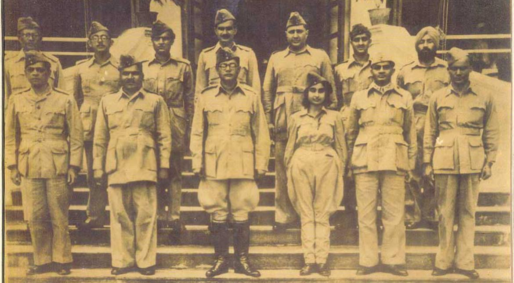

Netaji Subash Chandra Bose
Founder of Indian National Army

A rare picture of Netaji Subhas Chandra Bose, first row-center and Members of the Azad Hind Fauj - 1940's
- 1897 - Cuttack, Orissa Division, Bengal Presidency, British India (present-day Odisha, India)
- 1902 - He was admitted to the Protestant European School (presently Stewart High School)
- 1909 - shifted to the Ravenshaw Collegiate School
- 1913 - secured second position in the matriculation examination and got admitted to the Presidency College where he studied briefly
- 1918 - receives a B.A. in philosophy
- 1919 - took the ICS examination in March and left India in April for Great Britain
- 1925 - Netaji was arrested
- 1927 - Netaji was released from the prison and started working
- 1930 - becomes the Mayor of Calcutta
- 1938 - accepts nomination as INC presidential
- 1939 - organises All India Forward bloc
- 1940 - kept under house arrest
- 1941 - escaped India and arrived Germany
- 1945 - Netaji dissapeared
Here's a timeline of Netaji's life:
One individual may die for an idea, but that idea will, after his death, incarnate itself into thousand lives.
-- Netaji Subas Chandra Bose